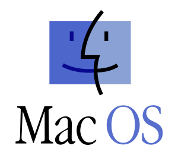

🗓️ Week 02
Operating Systems, Files & The Terminal
07 October 2022
History of Operating Systems


History
- In the early days of modern computing, back when computers were not accessible to everyone, software (applications) generally came with the open source code.
- You could read precisely which instructions the computer would follow when running the software.
- As the industry grew, most software companies released only the binaries — a type of file you can only execute, not read as if it was a text.
- This includes Operating Systems! ⏭️

(Computer History Museum n.d.)
UNIX
- UNIX was the first big Operating System, developed at Bell Labs and AT&T
- It aimed to be simple* and easy to port to any hardware architecture
- But it required a license
- In the late 1980s and early 1990s, a group of hackers and activists developed free & open source alternatives to UNIX.

{kind=link}
GNU/Linux
- This led to the birth of one of the most influential operating systems: GNU/Linux, or simply Linux.
 Android, the most popular OS for phones worldwide, is based on Linux.
Android, the most popular OS for phones worldwide, is based on Linux.
- Two people were instrumental to the development of Linux
- Richard Stallman
- Linus Torvalds
Note
GNU stands for “GNU is not Unix”. Yes, it is recursive.


Windows
- Windows has its own history.
- Its predecessor, OS/2 operating system was co-developed by Microsoft and IBM.
- But then, Microsoft took on its own path and developed its own versions of the OS: Windows NT, Windows 95, Windows 98, Windows 2000, Windows XP, Windows 7, Windows Vista*, etc.
- Windows popularity can be traced to the success of the Office suite


Virtualization
- Virtualization is a technology that creates the illusion that you are running a separate private computer.
- You decide how much of your CPU/RAM/Hard drive to share with the virtual machine

Emulators & Virtual Machines
- You can install an emulator to run Windows inside Mac (and vice-versa)
- Provided you own a licence to install the other OS
- You can share files to and from the virtual machine inside the emulator, but the internal machine will “think” it is a separate computer.
Note
- In the 🖥️ labs on 🗓️ Week 03, you will access a virtual machine that lives in the cloud
- Example of commercial virtualization softwares

Windows Subsystem for Linux (WSL)
- In an attempt to entice Linux users (especially developers), Microsoft added a Linux emulator to Windows named “Windows Subsystem for Linux”
- You install your preferred Linux distribution
- Ubuntu is one of the most popular

Tip
- Our 🖥️ labs on Weeks 2 & 3 will focus on Linux/UNIX-like commands.
- Windows users will have to install WSL on their computers.
The Terminal
- A terminal, or command prompt, is a screen or a window that lets you access the Operating System’s input and output.
- There are no graphics (images/video) in the terminal, only text.

{kind=link}
{kind=link}
What are files?

- Ultimately, everything in a computer is just a bunch of
0s and1s - Files are a set of conventions that allows us to extract information from them.
- Let’s see where these ideas come from ⏭️
References
Computer History Museum. n.d. “1950 Timeline of Computer History.” 1950 Timeline of Computer History. Accessed September 16, 2022. https://www.computerhistory.org/timeline/1950/.
Ebrahim, Mokhtar, and Andrew Mallett. 2018. Mastering Linux Shell Scripting: A Practical Guide to Linux Command-Line, Bash Scripting, and Shell Programming, 2nd Edition. 2nd ed. Birmingham: Packt Publishing.
Pelz, Oliver. 2018. Fundamentals of Linux: Explore the Essentials of the Linux Command Line. Birmingham: Packt Publishing Ltd.
Silberschatz, Abraham, Peter B. Galvin, and Greg Gagne. 2005. Operating System Concepts. 7th ed. Hoboken, NJ: J. Wiley & Sons.